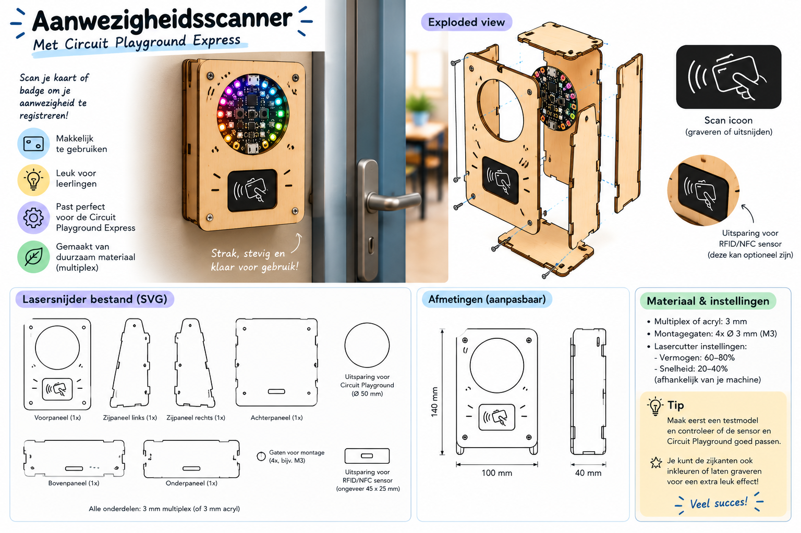
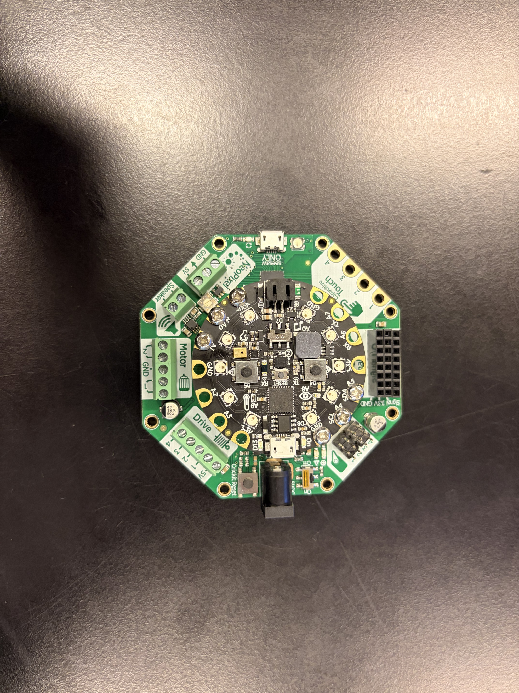
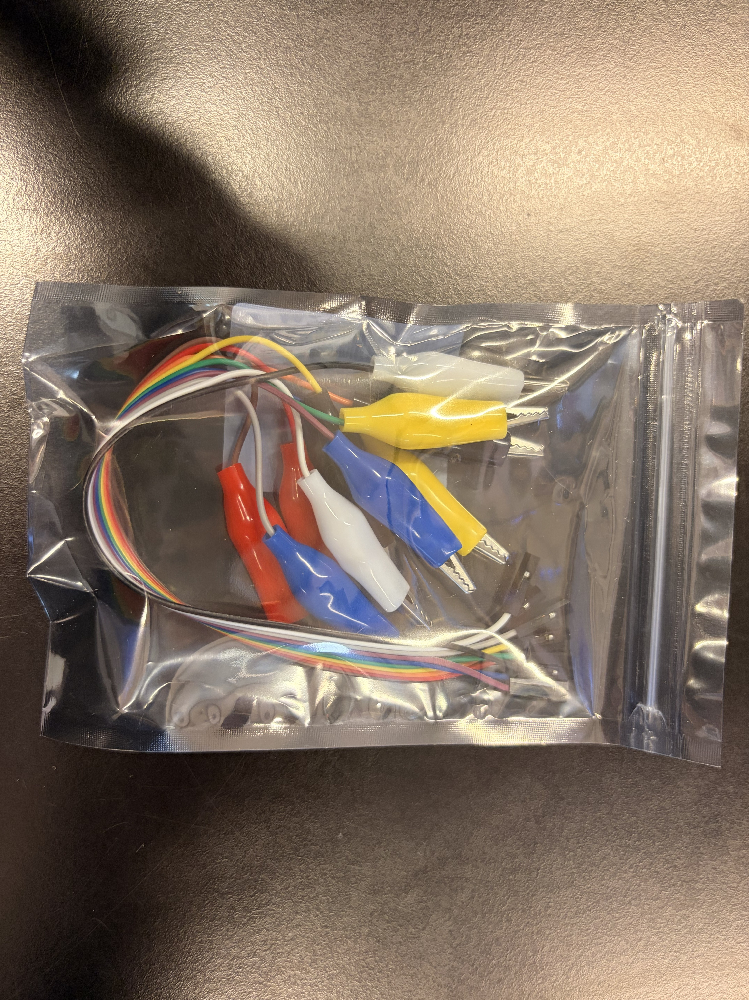
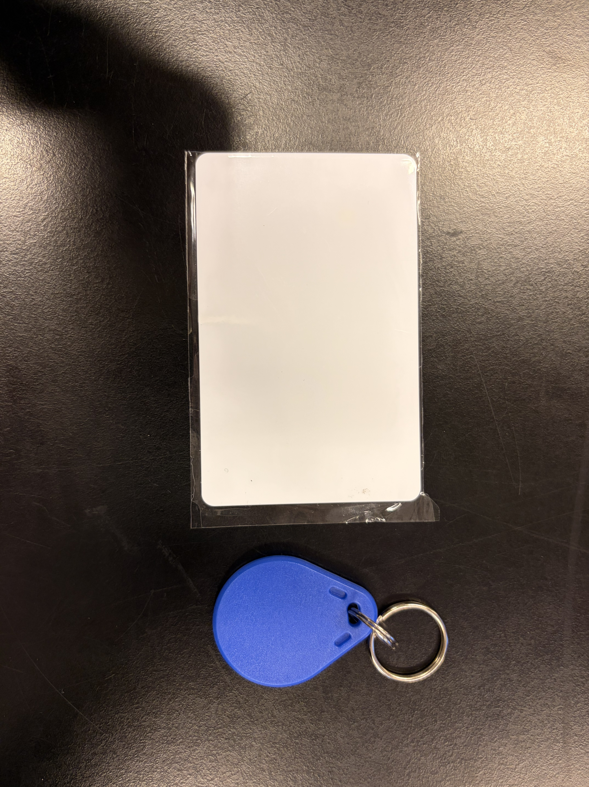
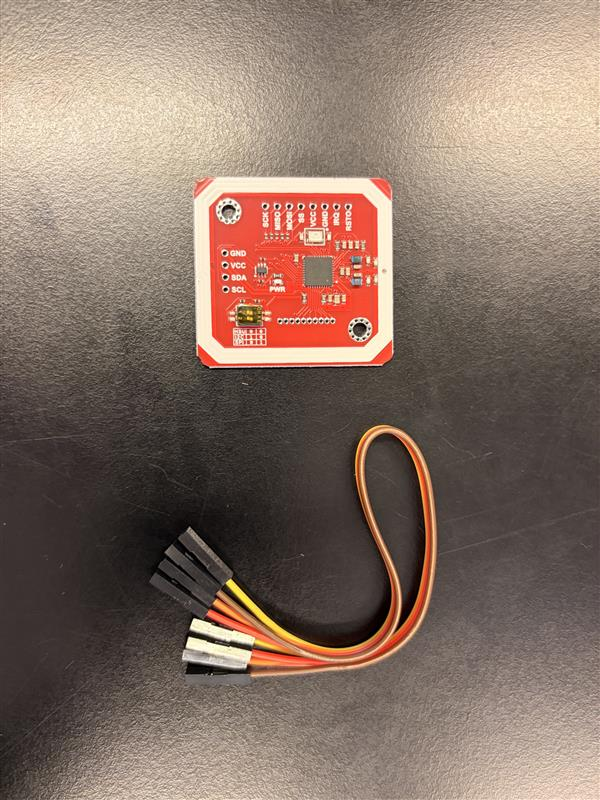

Aanwezigheidsscanner
Aan het begin van de les kost het controleren van de aanwezigheid tijd. Met onze scanner houdt de leerling een tag of kaartje voor de scanner en staat hij of zij direct als aanwezig geregistreerd. Zo kan de docent meteen met de les beginnen.
Het prototype is gebouwd met een Circuit Playground Express in een behuizing van lasergesneden multiplex.

Gebruiksinstructies
- Zet de scanner aan.
- Plaats de scanner op de juiste plek naast de deur van het lokaal.
- Pak een tag of kaartje en houd deze voor de scanner.
-
Let op het lampje, dat 2 seconden brandt:
- Groen: de tag is goed gescand.
- Rood: de tag is niet goed gescand. Probeer het opnieuw.
Onderdelen

CPX

Krokodilklemmen

Tag

Tagreader